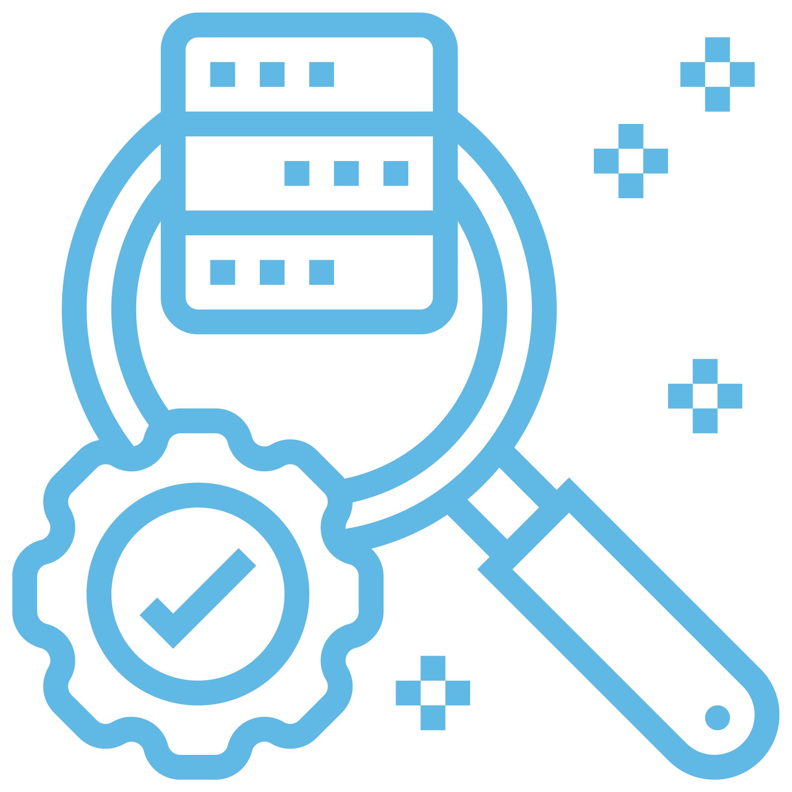

14 Factors That Help Risk Managers Take Control of Property Risk:
The ability to provide precise replacement cost values of properties to underwriters is critical. This not only helps achieve proper recovery in the event of a loss but also helps optimize your risk transfer solution purchase. Similarly, businesses need concise analysis of the critical functions and operations contributing to their revenue streams for accurate assessments of potential business interruption exposures. Regardless of the size or scope of your operations, you should make sure your property and business interruption values are accurate and current as well to distinguish replacement values from market values for your physical assets. Given the rising cost of building materials, annual updates, including the market costs for materials, should be considered.
Replacement Cost:
Loss History:
Risk Profile:
Prevention and Engineering:
Business Continuity Management:
Supply-Chain Resiliency:
Insurance Recovery:
Pricing:
Policy Terms:
Structure:
Limits and Sublimits:
Insurer Stability:
CAT Exposure and Natural Catastrophe Modeling:
Retentions:
Property insurance programs consider five- and 10-year loss experience. Many property underwriters consider loss history, including frequency and severity, to be the single most significant factor in rating a client’s insurance program. Thus, there is a direct correlation to an insured’s loss experience and its property total cost of risk (TCOR). By analyzing geographic locations and vulnerability to natural hazards, industry-specific exposures, supply chain, construction and business continuity planning, businesses can help reduce their exposure to loss going forward.

From an underwriter’s perspective, a client’s risk profile is a key consideration in determining pricing, terms and capacity. In addition to industry sector and recent and historical loss experience, a risk profile typically includes geographical locations and values, as well as structure and catastrophe risk exposure. The risk profile also considers a firm’s implementation of sound risk management practices, such as fire safety, updated and regularly practiced business continuity management plans, and supply-chain resiliency. Measures aimed at strengthening your risk profile can lead to more effective negotiations with insurers and, as a general matter, a lower overall cost of risk.
There is no proven strategy to eliminate exposure to loss, but risk leaders can certainly manage, mitigate and minimize the complex web of loss exposures, which can range from damage or destruction of owned physical assets and those of suppliers to business interruption or curtailment from a variety of perils. For businesses and suppliers that operate in catastrophe-prone regions or have limited water supplies to address fire risks, fire protection and risk engineering services can elevate a company’s capabilities to meet global standards. New technology tools such as earth movement or water sensors can also be used to measure and monitor the physical risks.
One of the most devastating exposures for any business is the disruption or curtailment of critical operations. Besides the obvious loss of revenue is the potential for prolonged or permanent loss of, among other things, market share, reputational damage and flight of key employees. Effective business continuity management calls for identifying vulnerabilities, calculating maximum foreseeable loss, and developing plans. These steps should focus resources on critical operations to minimize the impact of risk while ensuring continuity of critical business processes, customer satisfaction, financial stability, contractual/regulatory compliance, operational capabilities and brand reputation.
For many businesses, even a temporary disruption for a critical supplier, or even a supplier’s supplier, can have devastating consequences that can extend beyond short-term revenue loss to include reputational damage and market share deterioration. Given the strategic significance of global supply networks, businesses should direct adequate resources to maintain supply-chain resiliency and protect the value they deliver. Solutions ranging from a vendor resiliency analysis of key suppliers to actuarial capabilities and exposure valuation analytics can help firms pinpoint how and where value is generated, quantify potential vulnerabilities, focus resources where they will deliver maximum resilience, and assess or determine the adequacy of business interruption (BI) and contingent BI insurance coverages.
Whenever a business sustains a loss — whether it involves damage to an individual facility, a major catastrophe that causes supply-chain outages, or destruction of multiple properties — effective insurance recovery requires a fast and often comprehensive response from claim professionals. Because the ability to achieve a timely and complete insurance recovery is a critical element of a company’s TCOR, businesses should take steps in advance of any loss events to review their coverages and position themselves to maximize recoveries should a loss occur.
Policy terms can change from year to year, depending on market conditions, loss experience and changes in an insured firm’s risk profile and operations. An evolving risk market can make terms and conditions more favorable or restrictive. For example, in response to the number of natural catastrophes in recent years, many insurers tightened coverage for BI and contingent BI exposures. Changing marketing conditions can put risk managers in a tough position when it comes time to renew. It’s important to communicate the realities of the market to your organizational stakeholders who are not accustomed to seeing year-over-year material changes in policy terms, coverages and premiums.
An efficient program structure can go a long way toward helping an insured business or entity control its premium outlay, address critical exposures, and effectively take control of its property risk. In evaluating this element of risk costs, businesses should work with their broker to assess any potential coverage gaps and determine how consistently their various property policies will respond to a loss event. Businesses should also consider how different first party policies tie together (or not) and how some coverages may overlap, such as property and cyber, property and environmental or property and crime. Consider all the options in the purchasing phase and as claims occur.
Businesses need to assess the adequacy of their property insurance limits to address any maximum foreseeable loss and understand how sublimits for certain types of perils, such as flood or wind, might affect the financial consequences to their firms from various loss events. Again, it is important to communicate to key stakeholders as to how these limits may change year over year.
The challenging investment climate and the potential for property insurance companies to sustain large losses, despite sophisticated tools and algorithms to manage their aggregated exposures, have created an environment in which insurance market security and claims-paying ability requires constant monitoring. Partner closely with your broker to assess whether your risk transfer markets remain secure.
To effectively take control of an organization’s property risk and gain access to more capital and capacity, more businesses are leveraging analytics to best determine their optimal level of risk retention. Depending on how much risk they choose to retain, they might consider evaluating the effectiveness of single-parent or group captives or other alternative risk-financing approaches, including parametric insurance, as strategic mechanisms that might provide the ability to raise retentions and reduce risk transfer. Risk managers can consider using parametric insurance to make certain uninsurable risks insurable and complement their traditional indemnity programs. Parametric insurance can help organizations match insurance capital to their specific risk profiles, providing more liquidity exactly when they may need it the most.
As businesses expand operations globally, they must be aware of potential vulnerabilities to natural disasters and catastrophic risks to confidently measure and manage their property TCOR. Natural catastrophe modeling data provides primary and secondary characteristics on potential exposures. The data also uncovers seismic risks from which organizations can pinpoint areas where properties potentially require engineering or property control attention to determine whether they are properly prepared to mitigate effects of an event. It is important to work with a broker that can provide modeling data on your CAT-prone locations.
There are many variables that affect the pricing of your property program, including:
Working with your broker to benchmark your program against similar types of exposures will help determine whether your program is priced competitively and in line with your risk appetite.
industry sector, and various loss control and mitigation programs).
• Commercial insurance market conditions
• The amount and type of coverage purchased
• Risk retained
• Program structure
• All the elements that make up a company’s risk profile (loss history, location and construction of properties,


